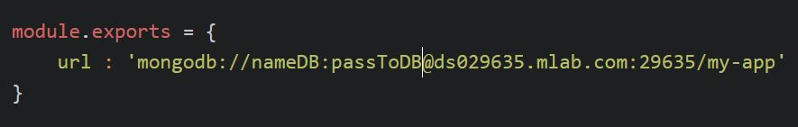

REST
Что такое REST.
- Это стиль архитектуры для распределенных систем ( www )
- Термин REST был введен в 2000 году Роем Филдингом, одним из авторов HTTP-протокола
- Системы, поддерживающие REST, называются RESTful-системами.
Почему RESP?
Архитектура для web-application популярна потому что:
- очень простой интерфейс управления информацией
- простота основана на уникальности идентификатора еденицы информации
- и CRUD на основе протокола HTTP.
- Уникальность информации состоит из URL строго заданного формата - адреса http/https.
- 4 команды CRUD:
GET - R read (получить)
PUT - C create, U update (добавить, заменить)
POST - C create, U update, D delete (добавить, заменить, удалить)
DELETE - D delete (удалить)
REST
URL подобен первичному ключу для единицы данных
ua/kiev/kreshatic/19/
GET /ua - получить список всех населенных пунктов
GET /ua/kiev/kreshatic - получить список всех зданий на Крещатике
PUT ua/kiev/kreshatic/9 - добавить здание на Крещатик
POST ua/kiev/kreshatic/19/ - изменить здание
DELETE ua/kiev/kreshatic/9 - удалить здание
Инструменты для создания тестовых запросов
( restclient + browserName):
g postman rest client
FireFox: https://addons.mozilla.org/uk/firefox/addon/restclient/
Chrome: https://chrome.google.com/webstore/detail/advanced-rest-client/hgmloofddffdnphfgcellkdfbfbjeloo
REST client
REST client: настройка заголовка
Для POST и PUT важно установить правильный заголовок, например для JSON:
name: Content-Type
value: application/json
REST и JSON
REST запросы отлично работают с JSON.
Для создания web-application и проверки REST запростов можно использовать тестовый json-server
Подробнее здесь: https://github.com/typicode/json-server
CLI
Install global
npm install -g json-server
Install local
mkdir project
cd project
npm init
npm install json-server --save-dev
touch db.json
json-server --watch db.json --port 3333
Создан и запущее json-server с пустой базой данной db.json
REST и CRUD
Теперь мы можем имитировать отправку REST запросов к базе данных со страницы нашего приложения.
Работа с реальной базой данной немного сложнее, но этот пример позволит отладить логику приложения до подключения БД.
REST client: GET
Не нуждается в дополнительной информации в заголовке
REST client: POST
При работе с базой данных обязательно создавать id для каждой новой записи
REST client: PUT update
id используется для update в URL и в JSON
REST работа с сервером баз данных MongoDB
Зарегистрируемся и получим бесплатный аккаунт с 500Mb сервера MongoDB:
https://mlab.com/REST выбираем план и создаем БД
REST выбираем план и создаем БД
REST выбираем план и создаем БД
REST url создаем пользователя
REST url для обращения к БД
REST основные комманды MongoDB
On-line тренажер для работы с MongoDB
https://www.tutorialspoint.com/mongodb_terminal_online.phphttps://docs.mongodb.com/manual/reference/
REST
Нельзя так просто взять и работать по url с DB
REST маршрутизация
REST маршрутизация
Express
// package.json
"dependencies": {
"body-parser": "^1.17.1",
"express": "^4.15.2",
"mongodb": "^2.2.24"
}
REST маршрутизация Express
// server.js
REST маршрутизация Express
// app_routes.js
REST маршрутизация Express: GET
// get.js
REST маршрутизация Express: POST
// post.js
REST маршрутизация Express: PUT
// put.js
REST маршрутизация Express: DELETE
// del.js